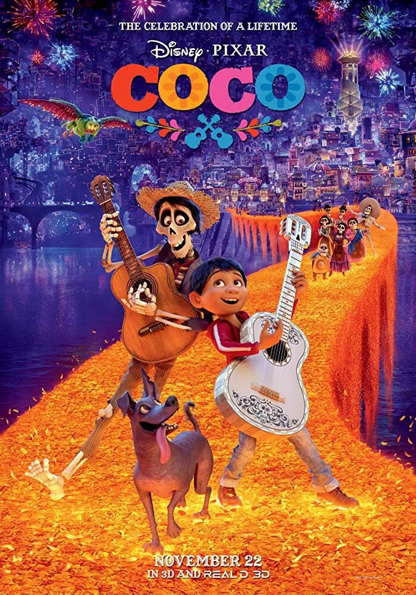

Apesar da proibição da música por gerações de sua família, o jovem Miguel sonha em se tornar um músico talentoso como seu ídolo Ernesto de la Cruz. Desesperado para provar seu talento, Miguel se encontra na deslumbrante e colorida Terra dos Mortos. Depois de conhecer um charmoso malandro chamado Héctor, os dois novos amigos embarcam em uma jornada extraordinária para desvendar a verdadeira história por trás da história da família de Miguel.
Extremamente colorido, o longa metragem é alegre e cheio de vida. São flores, fitas, velas, tochas, luzes, holofotes, cores florescentes e uma música animada de fundo - uma felicidade que até poderia soar como uma contradição tendo em conta o fato de ser o Día de Los Muertos 💀.
/i.s3.glbimg.com/v1/AUTH_59edd422c0c84a879bd37670ae4f538a/internal_photos/bs/2017/n/B/XwodBMTnWpMI2Ewo7ucQ/viva-miguel.jpg)
postado por rafaela ferreira-©